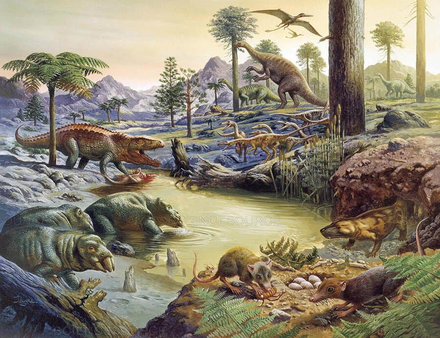
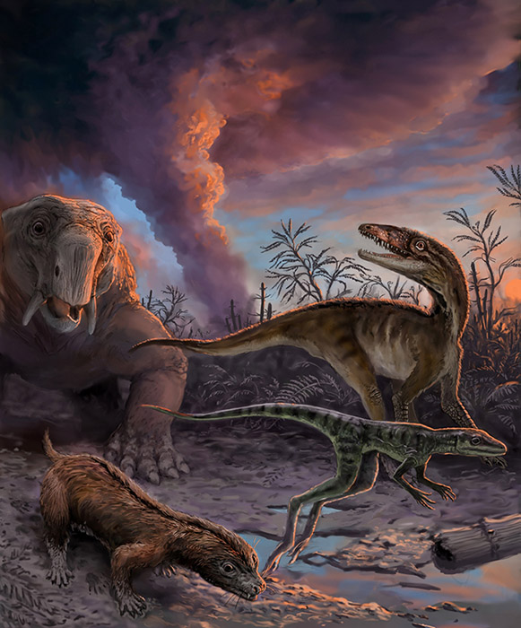

Seja Bem Vindo ao Mundo dos Dinossauros
Este é o lugar onde você pode navegar pela fascinante história dos Dinossauros.
O Início do Mundo dos Dinossauros
Há cerca de 230 milhões de anos, durante o período Triássico, surgiram os primeiros dinossauros na Terra. Nessa época, o planeta era muito diferente do que conhecemos hoje, todos os continentes estavam unidos em um único supercontinente chamado Pangeia, e o clima era quente e seco na maior parte do tempo.
Os primeiros dinossauros eram pequenos, ágeis e muitas vezes, carnívoros. Eles viviam ao lado de outros répteis e precisavam competir por espaço e alimento. Com o passar do tempo, esses animais começaram a evoluir, se diversificar e ocupar diferentes ambientes, dando origem a uma enorme variedade de espécies.
Durante milhões de anos, os dinossauros dominaram a Terra, adaptando-se a diferentes climas e regiões. Alguns se tornaram gigantes herbívoros, enquanto outros desenvolveram habilidades de caça impressionantes. Esse período marcou o início de uma das eras mais fascinantes da história do planeta.
A vitória dos dinossauros foi tão grande que eles se tornaram os principais habitantes da Terra por mais de 160 milhões de anos, deixando um legado que até hoje desperta curiosidade e admiração em pessoas de todas as idades.

